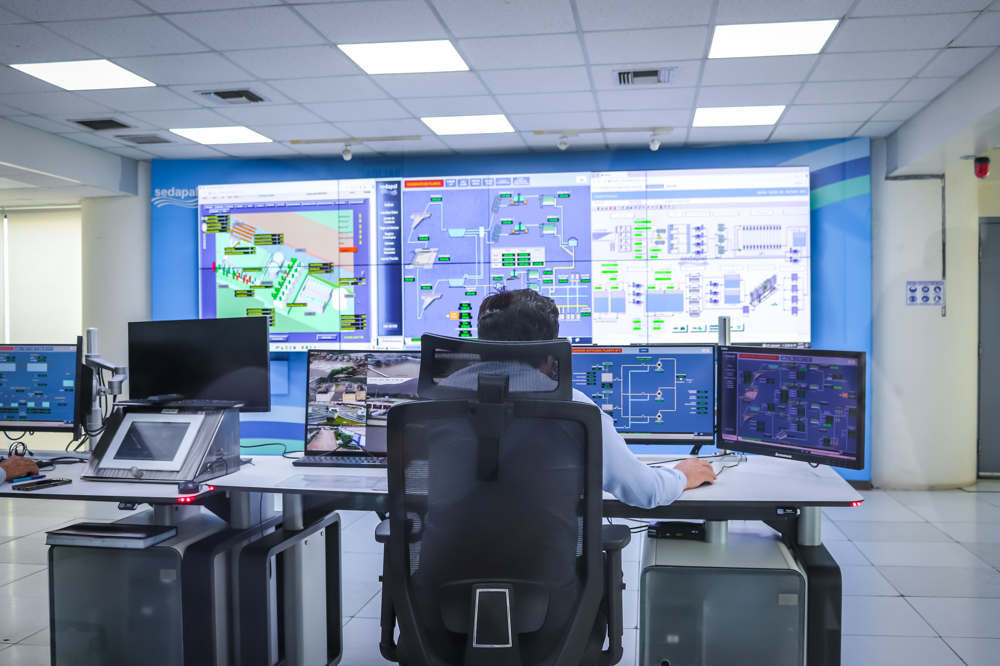

Skills
- Technical program management
- Business systems analysis
- Requirements gathering and process design
- Agile and Waterfall delivery leadership
Technical Program Manager | Business Systems Analyst | PMP
I lead complex digital transformation, telecommunications, cybersecurity, and enterprise systems initiatives across Agile and Waterfall environments.
About Me
I am a PMP-certified Technical Program Manager and Senior Business Systems Analyst with experience delivering enterprise technology programs across telecommunications, cybersecurity, cloud migration, inventory systems, and digital transformation. I work effectively across Agile, Scrum, Waterfall, and SAFe delivery environments, with strong focus on requirements, process modeling, workshops, UAT, and user stories.
Capabilities
Experience at a Glance
The portfolio now highlights the environments and challenges behind the work, from network operations to data-driven decision-making and software delivery.
Featured Projects
Led business analysis and delivery for a $200M+ network expansion program with OSS implementation and large-scale infrastructure rollout.
Telecom • OSS • Program DeliveryDelivered centralized NMS capabilities for 2G/3G networks, including API integrations, fault management, and operational workflow automation.
Network Management • APIs • NOCLed business analysis and Agile delivery for a WMS platform supporting inventory, logistics, and real-time supply chain operations.
WMS • ERP Integration • AgileCoordinated enterprise application migration from on-premises environments to cloud, covering planning, testing, and cutover.
AWS • Cloud • MigrationImproved customer self-service capabilities and support workflows through BSS portal enhancements and API integrations.
BSS • Customer Experience • Agile
Streamlined repetitive supply chain and procurement tasks through API-led integrations and RPA to reduce manual effort and improve compliance.
Automation • RPA • Procurement
Enhanced telecom asset visibility and lifecycle management through centralized inventory workflows, integrations, and operational reporting.
Telecom • Inventory • OSSDesigned a cybersecurity metrics framework using Splunk, CrowdStrike, Qualys, Tanium, Imperva, and other platforms for compliance and risk visibility.
Cybersecurity • Metrics • ComplianceContact
Interested in discussing a program, delivery challenge, or transformational initiative?
Email Me